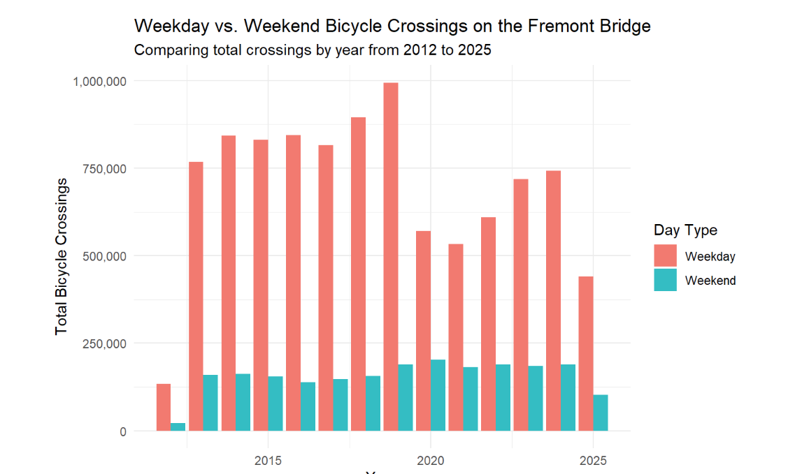
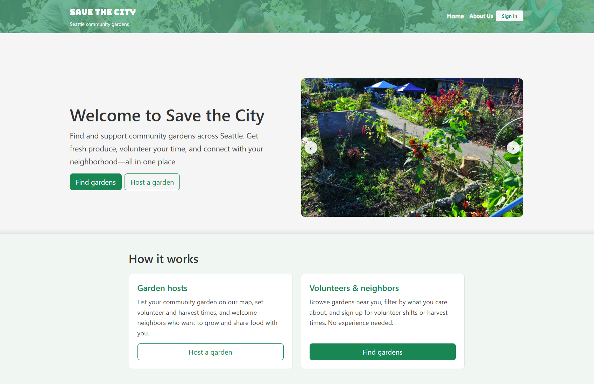
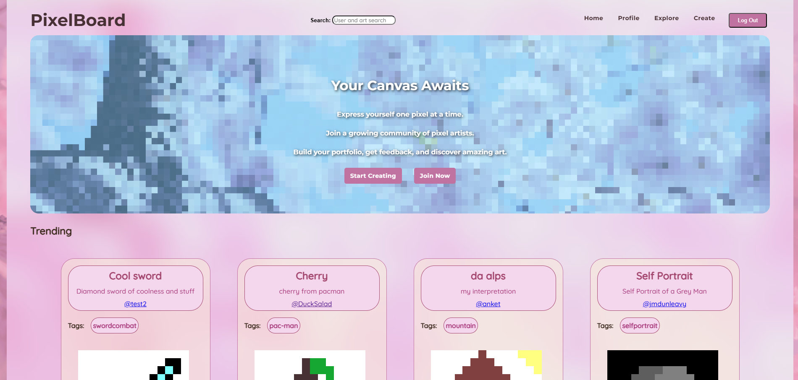

I'm studying Informatics with a concentration in data science, and I graduate in summer 2027. I'm working toward product and project management roles. I like finding out how people use a system, where it breaks down, and what a team should build next.
Projects
Real-Time Fisheries Compliance & Alert System

Problem
Fishing crews can break regulations by accident and overharvest fish populations without meaning to.
What I did
Researched how vessel operators work and which violations happen most often. Mapped the workflows and fishery-specific edge cases, then wrote them up as clear requirements.
Result
A backlog in Azure DevOps that the team used to guide development, and a design for real-time alerts.
Gallae

Problem
Students need an easier way to discover local music events.
What I did
Researched how students find music events, then designed an interactive Figma prototype that covers the path from discovery to RSVP.
Result
A prototype with event-based communities, badges for language and music taste, and moderation built for safety.
Bicycle Traffic Patterns on Seattle's Fremont Bridge

Problem
Seattle counts bikes on the Fremont Bridge every hour, but the raw counts don't show how riding has changed.
What I did
Analyzed 112,440 hourly bike-count records from 2012 to 2025 in R and split them into weekdays and weekends. I kept working on it after the class ended.
Result
Riding grew through 2019, then dropped sharply in 2020. Weekday totals fell by about 40% while weekend totals held steady.
Seattle Community Garden Connection

Problem
Seattle residents need an easy way to find and join local community gardens.
What I did
On a team, researched urban food deserts and barriers to participation, wrote user personas, and ran accessibility-focused research.
Result
A working web platform built around accessibility and clear information architecture.
PixelBoard

Problem
Pixel artists need a place to browse and share their work.
What I did
On a 5-person team, built the profile page (HTML, CSS, React) with customizable, interactive elements, and the site navigation bar.
Result
A community gallery for browsing and sharing pixel art.
Looking For Dawgs

Problem
UW students need a way to find study groups and get questions answered.
What I did
Built a React and Firebase study group platform with real-time Q&A and upvotes.
Result
Students can post questions, answer them, and upvote the answers that helped.
SecondStep (DubHacks prototype)

Problem
People in crisis can have a hard time finding food, shelter, and legal support.
What I did
Built a prototype at DubHacks, interviewed a law firm volunteer who works with people in crisis, and refined the design based on their feedback.
Result
A prototype designed for low-barrier access to food, shelter, and legal support.
Next up: more analysis reports in Python and pandas.
Skills
- Programming
- R (tidyverse, lubridate, ggplot2, Shiny), SQL, Python, Git/GitHub, HTML, CSS, JSX, React
- Data & Analytics
- Statistical Modeling, Data Cleaning & QC, Data Visualization, Matplotlib, Excel, Data Analysis
- Design & PM
- Figma, Azure DevOps, Miro, Wireframing, UX/UI Design, User Research, Prototyping
- Other
- Fluent in Spanish, Public Speaking, Team Collaboration
About
I'm in the Informatics program at the University of Washington Information School. I use R for most of my analysis and visualization, and I'm picking up more Python in my coursework. Outside of class, I like poking around in music data.